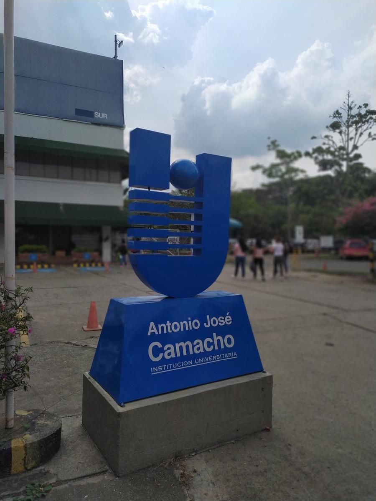

INFORMACIÓN QUE CONECTA ✳ CAMPUS + PLATAFORMAS ✳ PARTICIPACIÓN ACTIVA ✳ INFORMACIÓN QUE CONECTA ✳ CAMPUS + PLATAFORMAS ✳ PARTICIPACIÓN ACTIVA ✳ INFORMACIÓN QUE CONECTA ✳ CAMPUS + PLATAFORMAS ✳ PARTICIPACIÓN ACTIVA ✳ INFORMACIÓN QUE CONECTA ✳ CAMPUS + PLATAFORMAS ✳ PARTICIPACIÓN ACTIVA ✳
Anteproyecto · 2025Maestría en Comunicación Digital
RedCREA · Universidad Autónoma de Occidente
De la desinformación
a la participación.
Diseño de una estrategia de comunicación phygital diversificada para la comunidad universitaria de Unicamacho.
Un ecosistema para encontrar información clara, útil y cercana, y convertir la comunidad en participante activa.

UNIAJCCali · Colombia
información
que conecta
✳
que conecta
✳
La información institucional no solo debe existir.
Debe encontrar a su comunidad.
00 Elige tu ruta
Una entrada
para cada quien.
RedCREA conecta la información institucional con el momento, el canal y la necesidad de cada público.
Ruta 01Tu campus
Tu campus
en movimiento.
Encuentra rutas de trámites, conoce la Misión de Iniciación para explorar el reglamento y escucha micro-podcasts sobre la vida universitaria.
Ruta 02Enseñar
Enseñar
conectando.
Accede a guías para pantallas interactivas, laboratorios de prototipado, aulas híbridas y herramientas como Moodle y Miro.
Ruta 03Hacer que todo
Hacer que todo
fluya.
Consulta quién hace qué, cómo alimentar los puntos informativos del campus y qué métricas muestran el alcance de la estrategia.
01 El reto
Cuando saber
se vuelve difícil.
Unicamacho cuenta con web, repositorio y redes, pero la información se fragmenta y no siempre llega en el momento adecuado.
La pregunta que guía el proyecto
¿Qué características narrativas, mediáticas y tecnológicas debe tener una estrategia phygital diversificada para reducir la desinformación y fortalecer el sentido de pertenencia?
02 La propuesta phygital
Un campus
conectado.
No se trata de sumar canales, sino de crear una experiencia coherente entre el campus y las plataformas digitales.
NÚCLEO
COMÚNInformación clara
y verificable
COMÚNInformación clara
y verificable
La misma ruta, distintos puntos de entrada
Escanea→Entiende→Resuelve→Participa
03 Fundamentos
Cuatro formas
de mirar.
El proyecto articula comunicación, educación, tecnología y participación para transformar la relación con la institución.
04 Cómo se construye
Investigar
haciendo.
Un enfoque mixto y participativo para comprender, prototipar y ajustar la estrategia con la comunidad.
01
Diagnosticar
Mapear desinformación, canales y puntos de fricción.
02
Escuchar
Reconocer hábitos de estudiantes, docentes, egresados, funcionarios y directivos.
03
Diseñar
Integrar investigación-acción, Design Thinking y la metodología proyectual de Bruce Archer.
04
Prototipar
Probar rutas, mensajes y formatos antes de implementarlos.
Metodología en construcción · El muestreo aleatorio simple está pendiente de precisión.
05 De audiencia a comunidad
Tu voz también
diseña.
La participación no es el cierre del proceso: es el lugar desde donde se construye una comunicación más pertinente.
06 Recursos multimedia
Ver, escuchar
y participar.
Una biblioteca visual y audiovisual para entender cómo la comunicación institucional puede entrar en la vida cotidiana del campus.
Video del proyectoYOUTUBE / VIDEO
▶Tu video aquíPega el enlace de YouTube para activarlo
Aprender haciendo
El contenido también puede ser un punto de encuentro.
Galería / UNIAJCHaz clic para ampliar
06 Audio RedCREA
Escucha la
información.
Un espacio para conocer rutas, fechas y procesos de la vida universitaria a través de piezas breves y cercanas.
RED
CREA01
CREA01
Podcast · 01
Inscripciones Armando Carrera
0:000:00
RED
CREA02
CREA02
Podcast · 02
Proceso Inscripción Armando Carrera
0:000:00
RED
CREA03
CREA03
Podcast · 03
Fechas de Matriculas Armando Carrera
0:000:00
07 Detrás de cámaras
La estrategia
por dentro.
RedCREA combina diseño, operación y tecnología para llevar el diálogo del campus a sus plataformas.
Una voz
reconocible.
Mensajes accesibles, narrativas transmedia y piezas que hablan con claridad a cada público.
Una red
que responde.
Rutas, protocolos y responsables para que la información sea oportuna y verificable.
Un sistema
que conecta.
Web, QR, señalética, audio, video, gamificación y datos trabajando como un ecosistema.
Toolkit 3CConectar.
Conectar.
Comprender.
Co-crear.
Una herramienta para escuchar a la comunidad, interpretar sus necesidades y diseñar respuestas junto a ella.
06 Cómo sabremos si funciona
Medir para
mejorar.
El impacto esperado combina claridad, confianza, resolución y pertenencia.
01
Claridad
Conocimiento de reglamentos, servicios y rutas de atención.
02
Confianza
Uso y percepción de los canales institucionales.
03
Participación
Interacción, co-creación y formación en ciudadanía digital.
04
Pertenencia
Identidad, reputación y vínculo con Unicamacho.
✳
Lina María Cortés Cardona
Laura Isabel Guevara Martínez
Una universidad
que responde.
De la desinformación a la participación:
Diseño de una estrategia de comunicación phygital diversificada para la comunidad universitaria de Unicamacho.
Maestría en Comunicación Digital · Universidad Autónoma de Occidente · 2025
Escanea y conecta